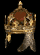

Diablo 2
Item of the Day
One rare
item a day
The pieces even a seasoned player does not know are valuable.
d2itemoftheday.com
C
rown
of
A
ges
C
orona
D
efense
: 399
R
equired
S
trength
: 174
R
equired
L
evel
: 82
+1
to
A
ll
S
kills
+50% E
nhanced
D
efense
P
hysical
D
amage
R
eceived
R
educed
by
15%
A
ll
R
esistances
+30
+30% F
aster
H
it
R
ecovery
S
ocketed
(2)
I
ndestructible
